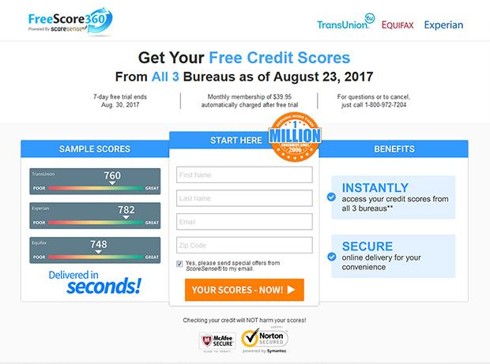

Credit Reports and Scores | USAGov
- Credit Reports and Scores | USAGov
WalletHub is the best credit score site because it offers free scores that are updated on a daily basis. Sure, we’re obviously biased in saying that. But it’s hard to compete with the latest info, personalized credit analysis and custom credit card recommendations. - Get Your Credit Score | 100% Free, Easy and Online!
The credit score model was created by the Fair Isaac Corporation, also known as FICO, and it is used by financial institutions. While other credit-scoring systems exist, the FICO score is by far ... - Free Credit Score - No Credit Card Required - Experian
What is a good Credit Score? There are multiple credit scoring models which means that a good credit score can be different depending on the scoring model being used. Credit scores can range between 300 and 850. A good credit score generally starts at 700, and a score of 800 or above is considered excellent. - Credit Score: Definition, Factors, and How to Improve It
‘Credit Score’ in India is a defining aspect for all those applying for loans or credit cards at banks and other financial institutions. Credit aspirants are judged on this score which is assigned to them by credit bureaus such as CIBIL, Experian, Equifax, CRIF High Mark, etc.The score is a numerical representation of your creditworthiness. - Free Credit Score & Free Credit Reports With Monitoring ...
Credit score calculated based on FICO ® Score 8 model. Your lender or insurer may use a different FICO ® Score than FICO ® Score 8, or another type of credit score altogether. Learn more. - 2020’s Best Credit Score Site - WalletHub
The credit card offers that appear on this site are from credit card companies from which we may receive compensation. This compensation may impact how and where products appear on this site (including, for example, the order in which they appear). ... Improvements are calculated from your baseline credit score, as determined by Credit Sesame ... - creditscore.com: Free Credit Score - FICO Score
If you have specific questions about the accessibility of this site, or need assistance with using this site, contact us. Please call Member Support at (888) 882-9277 or email legal@creditkarma.com - Best Free Credit Score Websites | Cafe Credit
Check your free CIBIL Score and Report and apply for a customized loan. Banks check your CIBIL Score before approving your loan. - Credit Score - Check Free CIBIL Score, Get Credit Score ...
Depending on the credit reporting agency, your score will be between zero and either 1,000 or 1,200. The score relates to a five-point scale (excellent, very good, good, average and below average). This helps a lender work out how risky it is for them to lend to you. - How Can I Check My Credit Scores? | Equifax®
FICO ® Scores are developed by Fair Isaac Corporation. The FICO ® Score provided by ConsumerInfo.com, Inc., also referred to as Experian Consumer Services ("ECS"), in Experian CreditWorks SM, Credit Tracker SM and/or your free Experian membership (as applicable) is based on FICO ® Score 8, unless otherwise noted. Many but not all lenders use FICO ® Score 8.

Skip to main content
An official website of the United States government
Here's how you know Official websites use .gov
A .gov website belongs to an official government organization in the United States.
Secure .gov websites use HTTPS
A lock ( ) or https:// means you’ve safely connected to the .gov website. Share sensitive information only on official, secure websites.
Credit and Debt
Credit Cards Credit Issues Credit Reports and Scores Dealing with DebtCredit Reports and Scores
Find out how to get your credit report, make corrections, and more.
On This Page
Infographic: Learn the Basics of Credit Reports and Scores Credit Reports Credit Scores Credit Freeze Errors on Your Credit Report Negative Information in a Credit Report Medical History ReportInfographic: Learn the Basics of Credit Reports and Scores
Learn how to get a copy of your credit report and fix any errors in it. This will help you improve your credit score.
View a larger version of the infographic.
Show Description of Infographic
Your credit report and score can affect your ability to get a loan, rent an apartment, or even qualify for a job.
A credit report shows your bill payment history, current debt, and other financial info. Companies and lenders use your credit report to calculate your credit score a number usually between 300 and 850.
The higher your score, the lower your interest rate may be for a loan or credit card.
Learn three ways to improve your credit report and score:
Check your credit report. Get a free report yearly from Equifax, Experian, and TransUnion at the official site AnnualCreditReport.com. Check for errors and for fraudulent accounts.This report does not include your credit score. Fix errors. Write to the credit reporting agency and information provider (bank, credit card company, etc.) detailing any errors or fraud. They’re required to investigate. Keep a copy of your correspondence. Know your credit score. Check your score for free on your credit card statement or online account or buy it from a credit reporting agency. Paying bills on time and reducing debt can help improve your score.
Learn more at usa.gov/credit-reports.
Credit Reports
Credit reports list your bill payment history, loans, current debt, and other financial information. They show where you work and live and whether you ve been sued, arrested, or filed for bankruptcy.
Credit reports help lenders decide if they ll give you credit or approve a loan. The reports also help determine what interest rate they will charge you. Employers, insurers, and rental property owners may also look at your credit report. You won t know which credit report a creditor or employer will use to check your credit.
Credit reporting agencies (CRAs) collect and maintain information for your credit reports. Each CRA manages its own records and might not have information about all your accounts. Even though there are differences between their reports, no agency is more important than the others. And the information each agency has must be accurate.
It s important to check your credit reports regularly to make sure that your personal and financial information is accurate. It also helps to make sure nobody s opened fraudulent accounts in your name. If you find errors on your credit report , take steps to have them corrected.
Free Credit Reports
On AnnualCreditReport.com you are entitled to a free credit report from each of the three credit reporting agencies (Equifax, Experian, and TransUnion) every week, through April 2021. You can request all three reports at once, or request them one at a time. Learn about other situations when you can request a free credit report .
Request Your Free Credit Report:
Online: Visit AnnualCreditReport.com
By Phone: Call 1-877-322-8228 . For TTY service, call 711 and ask the relay operator for 1-800-821-7232 .
By Mail: Complete the Annual Credit Report Request Form and mail it to:
Annual Credit Report Request Service
PO Box 105281
Atlanta, GA 30348-5281
If Your Request for a Free Credit Report is Denied:
Contact the CRA directly to try to resolve the issue. The CRA should tell you the reason they denied your request and explain what to do next. Often, you will only need to provide information that was missing or incorrect on your application for a free credit report.
If you can t resolve your dispute with the CRA, contact the Consumer Financial Protection Bureau (CFPB) .
Credit Scores
A credit score is a number that rates your credit risk. It can help creditors determine whether to give you credit, decide the terms they offer, or the interest rate you pay. Having a high score can benefit you in many ways. It can make it easier for you to get a loan, rent an apartment, or lower your insurance rate.
The information in your credit report is used to calculate your credit score. It s based on your:
Payment history
Outstanding balances
Length of credit history
Applications for new credit accounts
Types of credit accounts (mortgages, car loans, credit cards)
It s important to make sure your credit report is accurate, so your credit score can be too. You can have multiple credit scores. They re not calculated by the same credit reporting agencies that maintain your credit reports. Instead, they re created by different companies or lenders that use their own credit scoring system.
Your free annual credit report does not include your credit score, but you can get your credit score from several sources. Your credit card company may give it to you for free. You could also buy it from one of the three major credit reporting agencies. When you receive your score, you often get information on how you can improve it.
Credit Freeze
Placing a credit freeze allows you to restrict access to your credit report. This is important after a data breach or identity theft when someone could use your personal information to apply for new credit accounts. Most creditors look at your credit report before opening a new account. But if you ve frozen your credit report, creditors can t access it, and probably won t approve fraudulent applications.
You have the right to place or lift a credit freeze for free. You can place a freeze on your own credit files and on those of your children age 16 or younger.
Place a Credit Freeze
Contact each credit reporting agency to place a freeze on your credit report. Each agency accepts freeze requests online, by phone, or by postal mail.
Experian
Online: Experian Freeze Center
Phone: 1-888-397-3742
By mail, write to:
Experian Security Freeze
PO Box 9554
Allen, TX 75013
Equifax
Online: Equifax Credit Report Services
Phone: 1-800-685-1111
By mail, write to:
Equifax Information Services LLC
PO Box 105788
Atlanta, GA 30348-5788
TransUnion
Online: TransUnion Credit Freezes
Phone: 1-888-909-8872
By mail, write to:
TransUnion LLC
PO Box 2000
Chester, PA 19016
Innovis
Online: Innovis Freeze Options
Phone: 1-800-540-2505
By mail, write to:
Innovis Consumer Assistance
PO Box 26
Pittsburgh, PA 15230-0026
Your credit freeze will go into effect the next business day if you place it online or by phone. If you place the freeze by postal mail, it will be in effect three business days after the credit agency receives your request. A credit freeze does not expire. Unless you lift the credit freeze, it stays in effect.
Lift a Credit Freeze
If you want lenders and other companies to be able to access your credit files again, you will need to lift your credit freeze permanently or temporarily. Contact each credit reporting agency. Some require you to use a PIN or password to lift your credit freeze. You can lift your credit freeze as often as you need to, without penalties.
It takes one hour for a lift request to take effect if you place it online or by phone. It can take three business days if you request the lift by mail.
Errors on Your Credit Report
If you find errors on your credit report, write a letter disputing the error and include any supporting documentation. Then, send it to:
The credit reporting agency ( Equifax , Experian , or TransUnion )
The Information provider that gave the inaccurate information to the credit reporting agency. These providers include banks and credit card companies.
Find a sample dispute letter and get detailed instructions on how to report errors .
The credit reporting agency (CRA) and the information provider are liable for correcting your credit report. This includes any inaccuracies or incomplete information. The responsibility to fix any errors falls under the Fair Credit Reporting Act .
If your written dispute does not get the error fixed, you can file a complaint with the Consumer Financial Protection Bureau (CFPB) .
Negative Information in a Credit Report
Negative information in a credit report can include public records--tax liens, judgments, bankruptcies--that provide insight into your financial status and obligations. A credit reporting company generally can report most negative information for seven years.
Information about a lawsuit or a judgment against you can be reported for seven years or until the statute of limitations runs out, whichever is longer. Bankruptcies can be kept on your report for up to 10 years, and unpaid tax liens for 15 years.
Fixing Errors in a Credit Report
Anyone who denies you credit, housing, insurance, or a job because of a credit report must give you the name, address, and telephone number of the credit reporting agency (CRA) that provided the report. Under the Fair Credit Reporting Act (FCRA) , you have the right to request a free report within 60 days if a company denies you credit based on the report.
You can get your credit report fixed if it contains inaccurate or incomplete information:
Contact both the credit reporting agency and the company that provided the information to the CRA. Tell the CRA, in writing, what information you believe is inaccurate. Keep a copy of all correspondence.Some companies may promise to repair or fix your credit for an upfront fee--but there is no way to remove negative information in your credit report if it is accurate.
File a Complaint
If you have a problem with credit reporting, you can file a complaint with the Consumer Financial Protection Bureau (CFPB) .
Medical History Report
A medical history report is a summary of your medical conditions. Insurance companies use these reports to decide if they will offer you insurance. You have the right to get a copy of your report from MIB, the company that manages and owns the reporting database.
Sources of Information for a Medical History Report
If you reported a medical condition on an insurance application, the insurer may want to report it to MIB. An insurer can only share your medical condition with MIB if you give written permission. If you do give permission, the condition will be included in your medical history report.
Your medical history report does not include your complete medical records. Doctors, hospitals, pharmacies, and other health professionals can’t submit information to MIB. The report won’t include every diagnosis, blood test, or a list of your medicines.
A piece of information stays on your report for seven years. Your report can only be updated when you apply for an insurance policy with an MIB-member company, and give them permission to submit your medical conditions to MIB.
How Insurers Use Medical History Reports
When you apply for insurance, the insurer may ask for permission to review your medical history report. An insurance company can only access your report if you give them permission. The report contains the information you included in past insurance applications. Insurers read these reports before they ll approve applications for:
life health long-term critical illness, or disability insurance applications.Request Your Free Medical History Report
You have the right to get one free copy of your medical history report, also known as your MIB consumer file, each year. You can request a copy for:
Yourself Your minor child Someone else, as a legal guardian Someone else, as an agent under power of attorneyYou can request a medical history report online from MIB or by phone at 1-866-692-6901.
Not everyone has a medical history report. Even if you currently have an insurance plan, you won t have a report if:
You haven t applied for insurance within the last seven years Your insurance policy is through a group or employer policy The insurance company isn’t a member of MIB You didn’t give an insurer permission to submit your medical reports to MIBMedical ID Reports and Scams
Use your medical history report to detect if you are a victim of medical ID theft. You may be a victim if there is a report in your name, but you haven t applied for insurance in the last seven years. Another sign of medical ID theft is if your report includes illnesses that you don t have.
File a Dispute
Review your report to verify that it only includes medical conditions that you have. Request a re-investigation if your report is incorrect. Email your dispute to infoline@mib.com or write:
MIB Disclosure Office
50 Braintree Hill Park, Suite 400
Braintree, MA 02184.
Report unresolved disputes to the Consumer Financial Protection Bureau.
Share This Page:Do you have a question?
Ask a real person any government-related question for free. They'll get you the answer or let you know where to find it.
Talk to a live USA.gov agent Web Chat with a live USA.gov agentLast Updated: September 23, 2020
TopAbout USA.gov
About Us and Site Notices For the Media For Developers Report a Website Issue All Topics and ServicesAsk USA.gov a Question
Call 1-844-USAGOV1 (1-844-872-4681) En EspañolSign Up to Receive Email Updates
USAGov is the Official Guide to Government Information and Services
